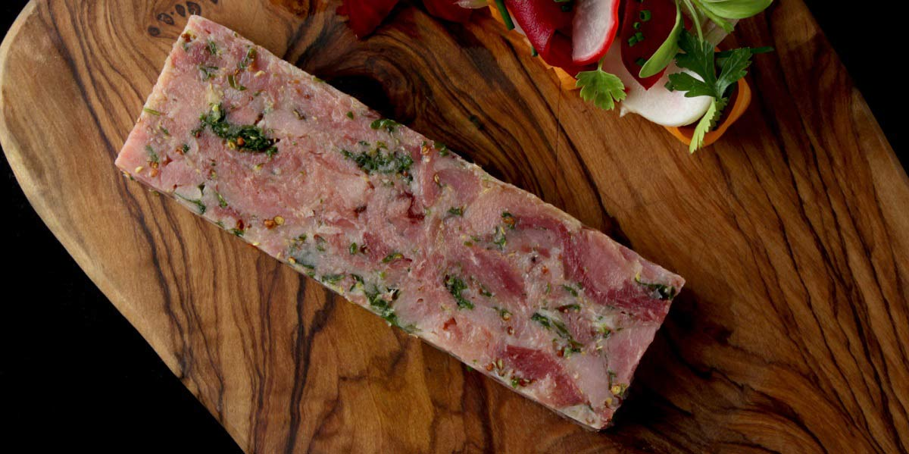

Ham Hock Terrine
Recipe Specification
Ingredients List
| Ingredients | Quantity |
|---|---|
| Ham Hocks | 3x1 |
| Bay Leaf | 2 leaves |
| Fresh Thyme | 4 Sprigs |
| Coriander Seeds | 1 tsp |
| Black Peppercorns | 1 tsp |
| White Onion | 2x1 |
| White Wine Vinegar | 60ml |
| Pickled Gherkins | 50g |
| Parsley | 60g |
| Wholegrain Mustard | 8g |
Yield: 4 portions
Preparation
- Leave Hocks to soak in water for 24 hours in fridge.
- Peel and cut white onion in half.
- Finely dice gherkin.
- Pick and finely chop parsley leaves.
- Remove hocks from cold water and pace in a large saucepan with bay leaves, thyme, coriander seeds, peppercorns, onions and vinegar. Add fresh cold water and submerge hocks.
Cooking Instructions
- Place sauce on high heat and bring to the boil before reducing to the simmer.
- Cook hocks for 2 and ½ hours.
- Remove hocks from cooking liquor and leave to cool for 30 minutes. Strain cooking liquor and return liquid to the pan. Turn the heat up to high and boil for an hour until liquid is reduced by ¾.
- Remove skin and pick meat off ham hocks. Place in a bowl with parsley, gherkins, wholegrain mustard and freshly cracked black pepper.
- Line a baking tray with layers of clingfilm and use clothe to ensure clingfilm is touch tight to the tray.
- Remove reduced liquor from heat, add a teaspoon of sugar and season to taste.
- Distribute meat mixture evenly in lined baking tray, pack it down firmly and slowly pour liquor over, ensuring meat is submerged by a few millimetres.
- Place clingfilm over the top of terrine and flatten terrine with another baking tray that the same size as the original tray.
- Place both tray in refrigerator for 12 hours with something heavy on top of it.
- Remove terrine from the fridge and cling film, and slice to a 1 cm thickness before serving.

Serving Suggestions
Serve terrine with freshly baked bread and red onion chutney.
Storing instructions
Consume within 1 week of making.